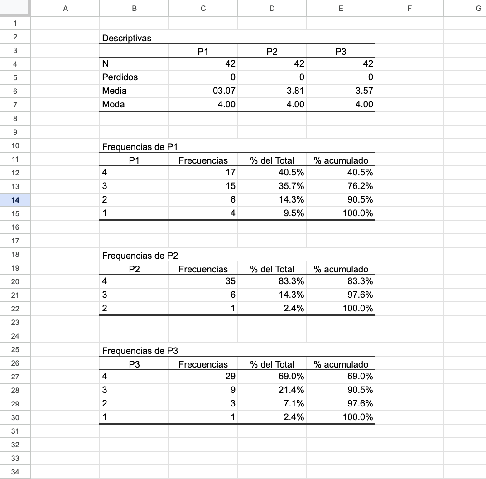

¿Qué recuerdas de estadística básica?
Estas cuatro preguntas activan lo que ya sabes. Si alguna te cuesta, pon atención a la sección que se indica en la respuesta.
{{ q.n }}. {{ q.pregunta }}
{{ q.fbTitulo }}
{{ q.fbTexto }}
1 · Introducción
¿Qué es tabular?
Tabular es traspasar las respuestas de tus instrumentos a una tabla ordenada, llamada base de datos. En ella cada fila es un participante y cada columna una pregunta. Con esa tabla, Jamovi cuenta cuántas veces aparece cada respuesta y calcula la media y la moda por ti.
Para la actividad evaluativa debes llegar con tu base de datos en Excel, construida con la plantilla de la sección 7.
Codificar
Cada respuesta se transforma en un número (sección 2).
Tabular y revisar
Los números se ordenan en la base y se revisan antes de analizar (secciones 3 y 4).
Analizar y presentar
Jamovi calcula los resultados; tú haces los gráficos en Google Sheets y completas la tabla síntesis (secciones 5 a 7).
2 · Codificación
¿Cómo codificar tus respuestas?
Codificar es asignar un número a cada respuesta. Estos son los tres casos más frecuentes. Usa siempre el mismo número para la misma respuesta.
Tu libro de códigos
Antes de digitar, anota qué significa cada número y qué dice cada enunciado. Este registro evita errores al traspasar los datos, te da los nombres de las columnas en Jamovi y, en Google Sheets, te permite cambiar los números por palabras antes de hacer los gráficos.
Numera todas las preguntas de corrido, en el orden en que aparecen en tu instrumento. Si el perfil tiene 4 preguntas (P1 a P4), el primer enunciado Likert es P5. Así ningún nombre se repite entre las hojas.
Así se ve un libro de códigos completo en Google Sheets (trabajo de un estudiante). A la izquierda, las preguntas de perfil con el significado de cada código; a la derecha, los enunciados Likert agrupados por dimensión.

Completa el tuyo en Plantillas, pestañas "Códigos perfil" y "Códigos preguntas". Al descargar el Excel quedará con este mismo formato.
¿Por qué no escribir "Hombre" o "Mujer" directamente en Excel?
Jamovi necesita números para calcular. Además, con palabras cualquier diferencia de escritura ("mujer", "Mujer", "Mujer " con un espacio al final) se cuenta como una categoría distinta y el gráfico sale con barras repetidas. Con números y un libro de códigos ese error no ocurre. Las palabras se escriben después, solo en la tabla de frecuencias que usarás para el gráfico.
3 · Ejemplo
Estructura de la base de datos
Así se ve una base de datos ya tabulada. Cada fila es un participante y cada columna una pregunta (P1, P2…). Los valores son los códigos del libro de códigos.
En la columna "Participante" escribe solo el número de cada persona (1, 2, 3…), sin letras. La letra "P" se usa solo para las preguntas (P1, P2…).
Hoja "Perfil"
P1 = Repitencia (1 = Sí · 2 = No) · P2 = Tiempo en el establecimiento (1 = menos de 1 año · 2 = 1 a 2 · 3 = 2 a 3 · 4 = más de 3) · P3 = Género (1 = Hombre · 2 = Mujer · 3 = Prefiero no decirlo)
Hoja "Preguntas" (escala Likert)
El perfil usó P1 a P3, así que los enunciados siguen desde P4. P4 a P7 pertenecen a la dimensión 1 y P8 a P11 a la dimensión 2. Escala: 1 = Totalmente en desacuerdo · 2 = En desacuerdo · 3 = De acuerdo · 4 = Totalmente de acuerdo.
Revisa tu base antes de pasarla a Jamovi
Un error de digitación cambia la media de toda una pregunta. Dedica unos minutos a estas cuatro revisiones.
{{ rv.titulo }}
{{ rv.texto }}
¿Y si mi instrumento tiene enunciados redactados en negativo?
Por ejemplo, "Me cuesta concentrarme en clases" dentro de una dimensión de motivación. En esos enunciados, estar de acuerdo expresa lo contrario que en el resto de la dimensión, y eso cambia la lectura de la tabla síntesis.
No los recodifiques por tu cuenta. Márcalos en tu libro de códigos y consúltalo en tutoría antes de completar la tabla síntesis.
5 · Guía práctica
Análisis en Jamovi
Sigue estos pasos en orden. Haz clic en cada uno para ver el detalle. Descarga Jamovi gratis desde jamovi.org.
6 · Gráficos
Tablas y gráficos en Google Sheets
Aquí transformas las tablas de Jamovi en tablas y gráficos con palabras, listos para tu informe. Tu base de datos no se modifica: solo cambias las tablas de frecuencias que pegaste.
Ver cómo se ve este error
La media de P1 debía ser 3.07 y quedó como "03.07", porque Google Sheets la leyó como fecha.

El gráfico circular funciona bien con pocas categorías (hasta cinco). Para pasarlo a tu informe, usa los tres puntos del gráfico → Copiar gráfico, y agrégale número y título en formato APA.
7 · Herramientas de entrega
Plantillas descargables
Completa cada tabla aquí mismo y descárgala. El botón de Excel descarga todo junto: el libro de códigos con formato y las bases de perfil y preguntas, listas para subir a Drive.
{{ tablaActivaNota }}
{{ saveNotice }}
Solo describe lo que muestran los datos. La interpretación se trabaja en otro recurso.
¿Qué significan los niveles 3 y 4? Depende de tu escala. En acuerdo son "De acuerdo" y "Totalmente de acuerdo"; en frecuencia, "Frecuentemente" y "Siempre"; en satisfacción, "Satisfecho" y "Muy satisfecho". Ojo con la escala de dificultad: ahí 3 y 4 son "Difícil" y "Muy difícil". Al describir, usa siempre las palabras de tu escala.
Ver ejemplo resuelto
Con la base de ejemplo de la sección 3, Jamovi entrega estas medias. Dimensión 1: P4 = 3,0 · P5 = 3,1 · P6 = 2,0 · P7 = 1,9. Dimensión 2: P8 = 2,1 · P9 = 2,2 · P10 = 2,2 · P11 = 2,4.
Para el % en los niveles 3 y 4 se suman, en la tabla de frecuencias de cada enunciado, los porcentajes de las respuestas 3 y 4. En P5 son 40 % + 40 % = 80 %.
| Dimensión | Enunciado con media más alta | Media | % niveles 3 y 4 | Enunciado con media más baja | Media | % niveles 3 y 4 |
|---|---|---|---|---|---|---|
| 1 | P5 | 3,1 | 80 % | P7 | 1,9 | 20 % |
| 2 | P11 | 2,4 | 50 % | P8 | 2,1 | 30 % |
Descripción modelo (escala de acuerdo). En la dimensión 1, el enunciado con la media más alta fue P5 (M = 3,1; 80 % de acuerdo) y el de la media más baja fue P7 (M = 1,9; 20 % de acuerdo). En la dimensión 2, el enunciado con la media más alta fue P11 (M = 2,4; 50 %) y el de la media más baja fue P8 (M = 2,1; 30 %).
Con otra escala, nombra los niveles con sus propias palabras. Por ejemplo, "el 80 % respondió Frecuentemente o Siempre".
Si dos preguntas empatan en la media, informa ambas.
Las tablas del informe se presentan en formato APA 7.ª edición. La descarga en Word ya viene con ese formato; solo reemplaza la N por el número de la tabla.
8 · Práctica
¿Qué harías tú?
Situaciones reales de esta etapa. Si te equivocas recibirás una pista y podrás intentarlo otra vez antes de ver la respuesta.
{{ q.n }}. {{ q.pregunta }}
{{ q.fbTitulo }}
{{ q.fbTexto }}
9 · Checklist
Lista de verificación antes de entregar
{{ checklistProgreso }} Tus marcas se guardan en este navegador.
Referencias
Referencias
Google. (s.f.). Cómo establecer la configuración de cálculo y la ubicación de una hoja de cálculo. Ayuda de Editores de Documentos de Google. https://support.google.com/docs/answer/58515?hl=es-419
jamovi. (s.f.). Data variables. jamovi documentation. https://docs.jamovi.org/data/data_1_overview_data_variables.html
Martín, U., González, Y., y Bacigalupe, A. (2012). Estadística descriptiva básica con Excel: funciones y tablas dinámicas. Universidad del País Vasco/Euskal Herriko Unibertsitatea. https://ocw.ehu.eus/pluginfile.php/48791/mod_resource/content/1/Manual%20de%20Excel.%20Mart%C3%ADn,%20Gonz%C3%A1lez%20y%20Bacigalupe.pdf
Posada Hernández, G. J. (2016). Elementos básicos de estadística descriptiva para el análisis de datos. Fondo Editorial Luis Amigó. https://www.funlam.edu.co/uploads/fondoeditorial/120_Ebook-elementos_basicos.pdf
Quesada Ibarguen, V. M., y Vergara Schmalbach, J. C. (2007). Estadística básica con aplicaciones en MS Excel. Eumed.net. https://www.eumed.net/libros-gratis/2007a/239/
The jamovi project. (2026). jamovi (Versión 2.7) [Software]. https://www.jamovi.org